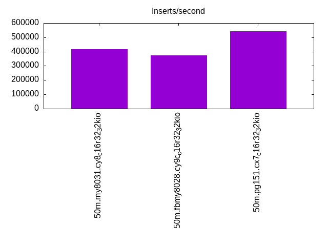
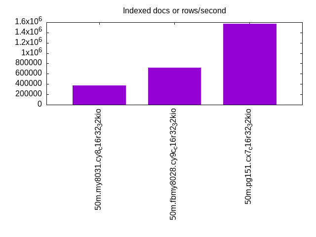
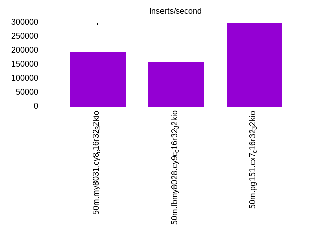
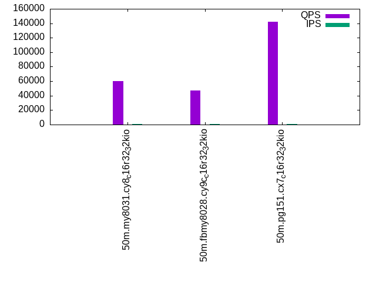
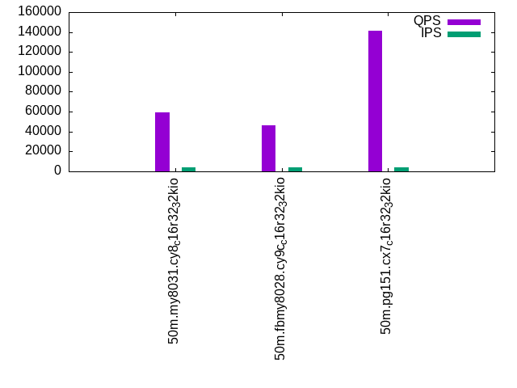
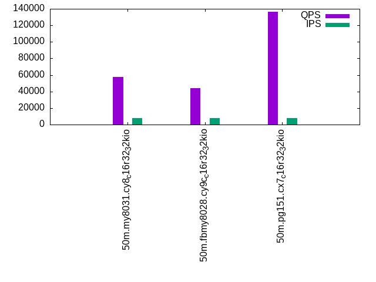

This is a report for the insert benchmark with 50M docs and 8 client(s). It is generated by scripts (bash, awk, sed) and Tufte might not be impressed. An overview of the insert benchmark is here and a short update is here. Below, by DBMS, I mean DBMS+version.config. An example is my8020.c10b40 where my means MySQL, 8020 is version 8.0.20 and c10b40 is the name for the configuration file.
The test server is an c6i.4xl with 8 cores, 8 HW threads (hyperthread disabled), 32G RAM and io2 storage (1T, 32K IOPs). The benchmark was run with 8 clients and there was 1 or 2 connections per client (1 for queries, 1 for inserts). The benchmark loads 25M rows without secondary indexes, creates secondary indexes, loads another 25M rows then does 3 read+write tests for one hour each that do queries as fast as possible with 100, 500 and then 1000 writes/second/client concurrent with the queries. The database is cached by the storage engine and the only IO is for writes. Clients and the DBMS share one server. The per-database configs are in the per-database subdirectories here.
The tested DBMS are:
The numbers are inserts/s for l.i0 and l.i1, indexed docs (or rows) /s for l.x and queries/s for q*.2. The values are the average rate over the entire test for inserts (IPS) and queries (QPS). The range of values for IPS and QPS is split into 3 parts: bottom 25%, middle 50%, top 25%. Values in the bottom 25% have a red background, values in the top 25% have a green background and values in the middle have no color. A gray background is used for values that can be ignored because the DBMS did not sustain the target insert rate. Red backgrounds are not used when the minimum value is within 80% of the max value.
| dbms | l.i0 | l.x | l.i1 | q100.1 | q500.1 | q1000.1 |
|---|---|---|---|---|---|---|
| 50m.my8031.cy8_c16r32_32kio | 416667 | 369118 | 193798 | 60062 | 58976 | 57582 |
| 50m.fbmy8028.cy9c_c16r32_32kio | 373134 | 717143 | 161290 | 47306 | 45931 | 44085 |
| 50m.pg151.cx7_c16r32_32kio | 543478 | 1568750 | 297619 | 142056 | 141376 | 136668 |
This lists the average rate of inserts/s for the tests that do inserts concurrent with queries. For such tests the query rate is listed in the table above. The read+write tests are setup so that the insert rate should match the target rate every second. Cells that are not at least 95% of the target have a red background to indicate a failure to satisfy the target.
| dbms | q100.1 | q500.1 | q1000.1 |
|---|---|---|---|
| my8031.cy8_c16r32_32kio | 798 | 3988 | 7976 |
| fbmy8028.cy9c_c16r32_32kio | 798 | 3989 | 7976 |
| pg151.cx7_c16r32_32kio | 798 | 3988 | 7978 |
| target | 800 | 4000 | 8000 |
l.i0: load without secondary indexes. Graphs for performance per 1-second interval are here.
Average throughput:
Insert response time histogram: each cell has the percentage of responses that take <= the time in the header and max is the max response time in seconds. For the max column values in the top 25% of the range have a red background and in the bottom 25% of the range have a green background. The red background is not used when the min value is within 80% of the max value.
| dbms | 256us | 1ms | 4ms | 16ms | 64ms | 256ms | 1s | 4s | 16s | gt | max |
|---|---|---|---|---|---|---|---|---|---|---|---|
| my8031.cy8_c16r32_32kio | 20.703 | 78.910 | 0.360 | 0.027 | nonzero | 0.065 | |||||
| fbmy8028.cy9c_c16r32_32kio | 13.659 | 85.310 | 0.996 | 0.036 | 0.055 | ||||||
| pg151.cx7_c16r32_32kio | 40.721 | 59.192 | 0.086 | 0.013 |
Performance metrics for the DBMS listed above. Some are normalized by throughput, others are not. Legend for results is here.
ips qps rps rmbps wps wmbps rpq rkbpq wpi wkbpi csps cpups cspq cpupq dbgb1 dbgb2 rss maxop p50 p99 tag 416667 0 0 0.0 550.1 104.7 0.000 0.000 0.001 0.257 115511 74.9 0.277 14 1.7 66.3 4.0 0.065 58537 6596 50m.my8031.cy8_c16r32_32kio 373134 0 0 0.0 485.2 109.6 0.000 0.000 0.001 0.301 26578 75.6 0.071 16 0.9 2.3 0.9 0.055 60554 47050 50m.fbmy8028.cy9c_c16r32_32kio 543478 0 0 0.0 860.3 195.5 0.000 0.000 0.002 0.368 40129 72.8 0.074 11 2.4 6.5 0.0 0.013 148144 15783 50m.pg151.cx7_c16r32_32kio
l.x: create secondary indexes.
Average throughput:
Performance metrics for the DBMS listed above. Some are normalized by throughput, others are not. Legend for results is here.
ips qps rps rmbps wps wmbps rpq rkbpq wpi wkbpi csps cpups cspq cpupq dbgb1 dbgb2 rss maxop p50 p99 tag 369118 0 2156 136.8 7009.6 337.4 0.006 0.379 0.019 0.936 36648 35.9 0.099 8 3.8 68.3 5.5 0.004 NA NA 50m.my8031.cy8_c16r32_32kio 717143 0 3 0.1 516.1 114.6 0.000 0.000 0.001 0.164 1807 74.1 0.003 8 1.8 3.3 2.9 0.002 NA NA 50m.fbmy8028.cy9c_c16r32_32kio 1568750 0 0 0.0 1835.0 443.5 0.000 0.000 0.001 0.289 9215 45.5 0.006 2 4.6 10.7 2.3 0.023 NA NA 50m.pg151.cx7_c16r32_32kio
l.i1: continue load after secondary indexes created. Graphs for performance per 1-second interval are here.
Average throughput:
Insert response time histogram: each cell has the percentage of responses that take <= the time in the header and max is the max response time in seconds. For the max column values in the top 25% of the range have a red background and in the bottom 25% of the range have a green background. The red background is not used when the min value is within 80% of the max value.
| dbms | 256us | 1ms | 4ms | 16ms | 64ms | 256ms | 1s | 4s | 16s | gt | max |
|---|---|---|---|---|---|---|---|---|---|---|---|
| my8031.cy8_c16r32_32kio | 0.022 | 98.578 | 1.253 | 0.124 | 0.024 | 0.202 | |||||
| fbmy8028.cy9c_c16r32_32kio | 5.163 | 89.466 | 5.324 | 0.047 | nonzero | 0.067 | |||||
| pg151.cx7_c16r32_32kio | 12.486 | 87.281 | 0.190 | 0.042 | 0.002 | 0.086 |
Performance metrics for the DBMS listed above. Some are normalized by throughput, others are not. Legend for results is here.
ips qps rps rmbps wps wmbps rpq rkbpq wpi wkbpi csps cpups cspq cpupq dbgb1 dbgb2 rss maxop p50 p99 tag 193798 0 908 14.2 1365.3 152.0 0.005 0.075 0.007 0.803 108954 78.9 0.562 33 9.9 74.5 11.3 0.202 25779 549 50m.my8031.cy8_c16r32_32kio 161290 0 49 6.1 756.7 172.0 0.000 0.039 0.005 1.092 28051 75.4 0.174 37 4.2 5.1 3.2 0.067 21427 2199 50m.fbmy8028.cy9c_c16r32_32kio 297619 0 0 0.0 1356.6 311.1 0.000 0.000 0.005 1.070 36698 90.5 0.123 24 9.6 26.1 0.0 0.086 40617 9989 50m.pg151.cx7_c16r32_32kio
q100.1: range queries with 100 insert/s per client. Graphs for performance per 1-second interval are here.
Average throughput:
Query response time histogram: each cell has the percentage of responses that take <= the time in the header and max is the max response time in seconds. For max values in the top 25% of the range have a red background and in the bottom 25% of the range have a green background. The red background is not used when the min value is within 80% of the max value.
| dbms | 256us | 1ms | 4ms | 16ms | 64ms | 256ms | 1s | 4s | 16s | gt | max |
|---|---|---|---|---|---|---|---|---|---|---|---|
| my8031.cy8_c16r32_32kio | 99.911 | 0.070 | 0.016 | 0.002 | nonzero | 0.030 | |||||
| fbmy8028.cy9c_c16r32_32kio | 99.656 | 0.320 | 0.019 | 0.004 | nonzero | 0.052 | |||||
| pg151.cx7_c16r32_32kio | 99.972 | 0.021 | 0.006 | 0.001 | nonzero | 0.026 |
Insert response time histogram: each cell has the percentage of responses that take <= the time in the header and max is the max response time in seconds. For max values in the top 25% of the range have a red background and in the bottom 25% of the range have a green background. The red background is not used when the min value is within 80% of the max value.
| dbms | 256us | 1ms | 4ms | 16ms | 64ms | 256ms | 1s | 4s | 16s | gt | max |
|---|---|---|---|---|---|---|---|---|---|---|---|
| my8031.cy8_c16r32_32kio | 97.998 | 2.000 | 0.002 | 0.026 | |||||||
| fbmy8028.cy9c_c16r32_32kio | 45.403 | 54.557 | 0.040 | 0.009 | |||||||
| pg151.cx7_c16r32_32kio | 0.017 | 99.856 | 0.127 | 0.008 |
Performance metrics for the DBMS listed above. Some are normalized by throughput, others are not. Legend for results is here.
ips qps rps rmbps wps wmbps rpq rkbpq wpi wkbpi csps cpups cspq cpupq dbgb1 dbgb2 rss maxop p50 p99 tag 798 60062 0 0.0 143.2 4.2 0.000 0.000 0.179 5.346 116391 95.0 1.938 127 11.5 76.0 12.7 0.030 7576 6441 50m.my8031.cy8_c16r32_32kio 798 47306 0 0.0 10.1 1.7 0.000 0.000 0.013 2.243 90791 95.2 1.919 161 3.8 5.0 9.1 0.052 5898 5194 50m.fbmy8028.cy9c_c16r32_32kio 798 142056 0 0.0 521.7 21.4 0.000 0.000 0.654 27.417 271802 95.2 1.913 54 10.6 26.4 0.0 0.026 17661 16974 50m.pg151.cx7_c16r32_32kio
q500.1: range queries with 500 insert/s per client. Graphs for performance per 1-second interval are here.
Average throughput:
Query response time histogram: each cell has the percentage of responses that take <= the time in the header and max is the max response time in seconds. For max values in the top 25% of the range have a red background and in the bottom 25% of the range have a green background. The red background is not used when the min value is within 80% of the max value.
| dbms | 256us | 1ms | 4ms | 16ms | 64ms | 256ms | 1s | 4s | 16s | gt | max |
|---|---|---|---|---|---|---|---|---|---|---|---|
| my8031.cy8_c16r32_32kio | 99.821 | 0.118 | 0.045 | 0.015 | 0.001 | nonzero | 0.113 | ||||
| fbmy8028.cy9c_c16r32_32kio | 98.923 | 1.033 | 0.021 | 0.021 | 0.003 | nonzero | 0.074 | ||||
| pg151.cx7_c16r32_32kio | 99.967 | 0.021 | 0.006 | 0.005 | nonzero | 0.047 |
Insert response time histogram: each cell has the percentage of responses that take <= the time in the header and max is the max response time in seconds. For max values in the top 25% of the range have a red background and in the bottom 25% of the range have a green background. The red background is not used when the min value is within 80% of the max value.
| dbms | 256us | 1ms | 4ms | 16ms | 64ms | 256ms | 1s | 4s | 16s | gt | max |
|---|---|---|---|---|---|---|---|---|---|---|---|
| my8031.cy8_c16r32_32kio | 86.408 | 13.442 | 0.149 | 0.046 | |||||||
| fbmy8028.cy9c_c16r32_32kio | 38.564 | 58.136 | 3.089 | 0.211 | 0.051 | ||||||
| pg151.cx7_c16r32_32kio | 8.935 | 89.761 | 1.198 | 0.105 | 0.060 |
Performance metrics for the DBMS listed above. Some are normalized by throughput, others are not. Legend for results is here.
ips qps rps rmbps wps wmbps rpq rkbpq wpi wkbpi csps cpups cspq cpupq dbgb1 dbgb2 rss maxop p50 p99 tag 3988 58976 0 0.0 160.5 5.4 0.000 0.000 0.040 1.398 114886 95.0 1.948 129 12.8 77.3 13.9 0.113 7418 6393 50m.my8031.cy8_c16r32_32kio 3989 45931 0 0.0 31.7 6.8 0.000 0.000 0.008 1.751 88582 95.2 1.929 166 4.8 5.9 21.1 0.074 5740 4349 50m.fbmy8028.cy9c_c16r32_32kio 3988 141376 0 0.0 604.0 40.9 0.000 0.000 0.151 10.491 270910 95.1 1.916 54 15.2 27.2 0.0 0.047 17725 16773 50m.pg151.cx7_c16r32_32kio
q1000.1: range queries with 1000 insert/s per client. Graphs for performance per 1-second interval are here.
Average throughput:
Query response time histogram: each cell has the percentage of responses that take <= the time in the header and max is the max response time in seconds. For max values in the top 25% of the range have a red background and in the bottom 25% of the range have a green background. The red background is not used when the min value is within 80% of the max value.
| dbms | 256us | 1ms | 4ms | 16ms | 64ms | 256ms | 1s | 4s | 16s | gt | max |
|---|---|---|---|---|---|---|---|---|---|---|---|
| my8031.cy8_c16r32_32kio | 99.460 | 0.394 | 0.125 | 0.020 | 0.001 | nonzero | 0.108 | ||||
| fbmy8028.cy9c_c16r32_32kio | 97.488 | 2.376 | 0.102 | 0.027 | 0.006 | nonzero | 0.082 | ||||
| pg151.cx7_c16r32_32kio | 99.915 | 0.030 | 0.049 | 0.002 | 0.005 | nonzero | 0.068 |
Insert response time histogram: each cell has the percentage of responses that take <= the time in the header and max is the max response time in seconds. For max values in the top 25% of the range have a red background and in the bottom 25% of the range have a green background. The red background is not used when the min value is within 80% of the max value.
| dbms | 256us | 1ms | 4ms | 16ms | 64ms | 256ms | 1s | 4s | 16s | gt | max |
|---|---|---|---|---|---|---|---|---|---|---|---|
| my8031.cy8_c16r32_32kio | 76.645 | 23.066 | 0.289 | nonzero | 0.066 | ||||||
| fbmy8028.cy9c_c16r32_32kio | 14.362 | 80.615 | 4.568 | 0.455 | 0.058 | ||||||
| pg151.cx7_c16r32_32kio | 2.043 | 91.176 | 6.192 | 0.585 | 0.004 | 0.091 |
Performance metrics for the DBMS listed above. Some are normalized by throughput, others are not. Legend for results is here.
ips qps rps rmbps wps wmbps rpq rkbpq wpi wkbpi csps cpups cspq cpupq dbgb1 dbgb2 rss maxop p50 p99 tag 7976 57582 0 0.0 295.5 11.2 0.000 0.000 0.037 1.434 113447 95.0 1.970 132 17.2 81.8 18.0 0.108 7272 6313 50m.my8031.cy8_c16r32_32kio 7976 44085 2 0.3 63.0 13.9 0.000 0.006 0.008 1.787 85586 95.1 1.941 173 6.8 7.6 21.2 0.082 5578 3868 50m.fbmy8028.cy9c_c16r32_32kio 7978 136668 0 0.0 598.5 56.3 0.000 0.000 0.075 7.222 262648 95.0 1.922 56 19.0 35.5 0.0 0.068 17497 15408 50m.pg151.cx7_c16r32_32kio
l.i0: load without secondary indexes
Performance metrics for all DBMS, not just the ones listed above. Some are normalized by throughput, others are not. Legend for results is here.
ips qps rps rmbps wps wmbps rpq rkbpq wpi wkbpi csps cpups cspq cpupq dbgb1 dbgb2 rss maxop p50 p99 tag 416667 0 0 0.0 550.1 104.7 0.000 0.000 0.001 0.257 115511 74.9 0.277 14 1.7 66.3 4.0 0.065 58537 6596 50m.my8031.cy8_c16r32_32kio 373134 0 0 0.0 485.2 109.6 0.000 0.000 0.001 0.301 26578 75.6 0.071 16 0.9 2.3 0.9 0.055 60554 47050 50m.fbmy8028.cy9c_c16r32_32kio 543478 0 0 0.0 860.3 195.5 0.000 0.000 0.002 0.368 40129 72.8 0.074 11 2.4 6.5 0.0 0.013 148144 15783 50m.pg151.cx7_c16r32_32kio
l.x: create secondary indexes
Performance metrics for all DBMS, not just the ones listed above. Some are normalized by throughput, others are not. Legend for results is here.
ips qps rps rmbps wps wmbps rpq rkbpq wpi wkbpi csps cpups cspq cpupq dbgb1 dbgb2 rss maxop p50 p99 tag 369118 0 2156 136.8 7009.6 337.4 0.006 0.379 0.019 0.936 36648 35.9 0.099 8 3.8 68.3 5.5 0.004 NA NA 50m.my8031.cy8_c16r32_32kio 717143 0 3 0.1 516.1 114.6 0.000 0.000 0.001 0.164 1807 74.1 0.003 8 1.8 3.3 2.9 0.002 NA NA 50m.fbmy8028.cy9c_c16r32_32kio 1568750 0 0 0.0 1835.0 443.5 0.000 0.000 0.001 0.289 9215 45.5 0.006 2 4.6 10.7 2.3 0.023 NA NA 50m.pg151.cx7_c16r32_32kio
l.i1: continue load after secondary indexes created
Performance metrics for all DBMS, not just the ones listed above. Some are normalized by throughput, others are not. Legend for results is here.
ips qps rps rmbps wps wmbps rpq rkbpq wpi wkbpi csps cpups cspq cpupq dbgb1 dbgb2 rss maxop p50 p99 tag 193798 0 908 14.2 1365.3 152.0 0.005 0.075 0.007 0.803 108954 78.9 0.562 33 9.9 74.5 11.3 0.202 25779 549 50m.my8031.cy8_c16r32_32kio 161290 0 49 6.1 756.7 172.0 0.000 0.039 0.005 1.092 28051 75.4 0.174 37 4.2 5.1 3.2 0.067 21427 2199 50m.fbmy8028.cy9c_c16r32_32kio 297619 0 0 0.0 1356.6 311.1 0.000 0.000 0.005 1.070 36698 90.5 0.123 24 9.6 26.1 0.0 0.086 40617 9989 50m.pg151.cx7_c16r32_32kio
q100.1: range queries with 100 insert/s per client
Performance metrics for all DBMS, not just the ones listed above. Some are normalized by throughput, others are not. Legend for results is here.
ips qps rps rmbps wps wmbps rpq rkbpq wpi wkbpi csps cpups cspq cpupq dbgb1 dbgb2 rss maxop p50 p99 tag 798 60062 0 0.0 143.2 4.2 0.000 0.000 0.179 5.346 116391 95.0 1.938 127 11.5 76.0 12.7 0.030 7576 6441 50m.my8031.cy8_c16r32_32kio 798 47306 0 0.0 10.1 1.7 0.000 0.000 0.013 2.243 90791 95.2 1.919 161 3.8 5.0 9.1 0.052 5898 5194 50m.fbmy8028.cy9c_c16r32_32kio 798 142056 0 0.0 521.7 21.4 0.000 0.000 0.654 27.417 271802 95.2 1.913 54 10.6 26.4 0.0 0.026 17661 16974 50m.pg151.cx7_c16r32_32kio
q500.1: range queries with 500 insert/s per client
Performance metrics for all DBMS, not just the ones listed above. Some are normalized by throughput, others are not. Legend for results is here.
ips qps rps rmbps wps wmbps rpq rkbpq wpi wkbpi csps cpups cspq cpupq dbgb1 dbgb2 rss maxop p50 p99 tag 3988 58976 0 0.0 160.5 5.4 0.000 0.000 0.040 1.398 114886 95.0 1.948 129 12.8 77.3 13.9 0.113 7418 6393 50m.my8031.cy8_c16r32_32kio 3989 45931 0 0.0 31.7 6.8 0.000 0.000 0.008 1.751 88582 95.2 1.929 166 4.8 5.9 21.1 0.074 5740 4349 50m.fbmy8028.cy9c_c16r32_32kio 3988 141376 0 0.0 604.0 40.9 0.000 0.000 0.151 10.491 270910 95.1 1.916 54 15.2 27.2 0.0 0.047 17725 16773 50m.pg151.cx7_c16r32_32kio
q1000.1: range queries with 1000 insert/s per client
Performance metrics for all DBMS, not just the ones listed above. Some are normalized by throughput, others are not. Legend for results is here.
ips qps rps rmbps wps wmbps rpq rkbpq wpi wkbpi csps cpups cspq cpupq dbgb1 dbgb2 rss maxop p50 p99 tag 7976 57582 0 0.0 295.5 11.2 0.000 0.000 0.037 1.434 113447 95.0 1.970 132 17.2 81.8 18.0 0.108 7272 6313 50m.my8031.cy8_c16r32_32kio 7976 44085 2 0.3 63.0 13.9 0.000 0.006 0.008 1.787 85586 95.1 1.941 173 6.8 7.6 21.2 0.082 5578 3868 50m.fbmy8028.cy9c_c16r32_32kio 7978 136668 0 0.0 598.5 56.3 0.000 0.000 0.075 7.222 262648 95.0 1.922 56 19.0 35.5 0.0 0.068 17497 15408 50m.pg151.cx7_c16r32_32kio
Insert response time histogram
256us 1ms 4ms 16ms 64ms 256ms 1s 4s 16s gt max tag 0.000 20.703 78.910 0.360 0.027 nonzero 0.000 0.000 0.000 0.000 0.065 my8031.cy8_c16r32_32kio 0.000 13.659 85.310 0.996 0.036 0.000 0.000 0.000 0.000 0.000 0.055 fbmy8028.cy9c_c16r32_32kio 0.000 40.721 59.192 0.086 0.000 0.000 0.000 0.000 0.000 0.000 0.013 pg151.cx7_c16r32_32kio
TODO - determine whether there is data for create index response time
Insert response time histogram
256us 1ms 4ms 16ms 64ms 256ms 1s 4s 16s gt max tag 0.000 0.022 98.578 1.253 0.124 0.024 0.000 0.000 0.000 0.000 0.202 my8031.cy8_c16r32_32kio 0.000 5.163 89.466 5.324 0.047 nonzero 0.000 0.000 0.000 0.000 0.067 fbmy8028.cy9c_c16r32_32kio 0.000 12.486 87.281 0.190 0.042 0.002 0.000 0.000 0.000 0.000 0.086 pg151.cx7_c16r32_32kio
Query response time histogram
256us 1ms 4ms 16ms 64ms 256ms 1s 4s 16s gt max tag 99.911 0.070 0.016 0.002 nonzero 0.000 0.000 0.000 0.000 0.000 0.030 my8031.cy8_c16r32_32kio 99.656 0.320 0.019 0.004 nonzero 0.000 0.000 0.000 0.000 0.000 0.052 fbmy8028.cy9c_c16r32_32kio 99.972 0.021 0.006 0.001 nonzero 0.000 0.000 0.000 0.000 0.000 0.026 pg151.cx7_c16r32_32kio
Insert response time histogram
256us 1ms 4ms 16ms 64ms 256ms 1s 4s 16s gt max tag 0.000 0.000 97.998 2.000 0.002 0.000 0.000 0.000 0.000 0.000 0.026 my8031.cy8_c16r32_32kio 0.000 45.403 54.557 0.040 0.000 0.000 0.000 0.000 0.000 0.000 0.009 fbmy8028.cy9c_c16r32_32kio 0.000 0.017 99.856 0.127 0.000 0.000 0.000 0.000 0.000 0.000 0.008 pg151.cx7_c16r32_32kio
Query response time histogram
256us 1ms 4ms 16ms 64ms 256ms 1s 4s 16s gt max tag 99.821 0.118 0.045 0.015 0.001 nonzero 0.000 0.000 0.000 0.000 0.113 my8031.cy8_c16r32_32kio 98.923 1.033 0.021 0.021 0.003 nonzero 0.000 0.000 0.000 0.000 0.074 fbmy8028.cy9c_c16r32_32kio 99.967 0.021 0.006 0.005 nonzero 0.000 0.000 0.000 0.000 0.000 0.047 pg151.cx7_c16r32_32kio
Insert response time histogram
256us 1ms 4ms 16ms 64ms 256ms 1s 4s 16s gt max tag 0.000 0.000 86.408 13.442 0.149 0.000 0.000 0.000 0.000 0.000 0.046 my8031.cy8_c16r32_32kio 0.000 38.564 58.136 3.089 0.211 0.000 0.000 0.000 0.000 0.000 0.051 fbmy8028.cy9c_c16r32_32kio 0.000 8.935 89.761 1.198 0.105 0.000 0.000 0.000 0.000 0.000 0.060 pg151.cx7_c16r32_32kio
Query response time histogram
256us 1ms 4ms 16ms 64ms 256ms 1s 4s 16s gt max tag 99.460 0.394 0.125 0.020 0.001 nonzero 0.000 0.000 0.000 0.000 0.108 my8031.cy8_c16r32_32kio 97.488 2.376 0.102 0.027 0.006 nonzero 0.000 0.000 0.000 0.000 0.082 fbmy8028.cy9c_c16r32_32kio 99.915 0.030 0.049 0.002 0.005 nonzero 0.000 0.000 0.000 0.000 0.068 pg151.cx7_c16r32_32kio
Insert response time histogram
256us 1ms 4ms 16ms 64ms 256ms 1s 4s 16s gt max tag 0.000 0.000 76.645 23.066 0.289 nonzero 0.000 0.000 0.000 0.000 0.066 my8031.cy8_c16r32_32kio 0.000 14.362 80.615 4.568 0.455 0.000 0.000 0.000 0.000 0.000 0.058 fbmy8028.cy9c_c16r32_32kio 0.000 2.043 91.176 6.192 0.585 0.004 0.000 0.000 0.000 0.000 0.091 pg151.cx7_c16r32_32kio